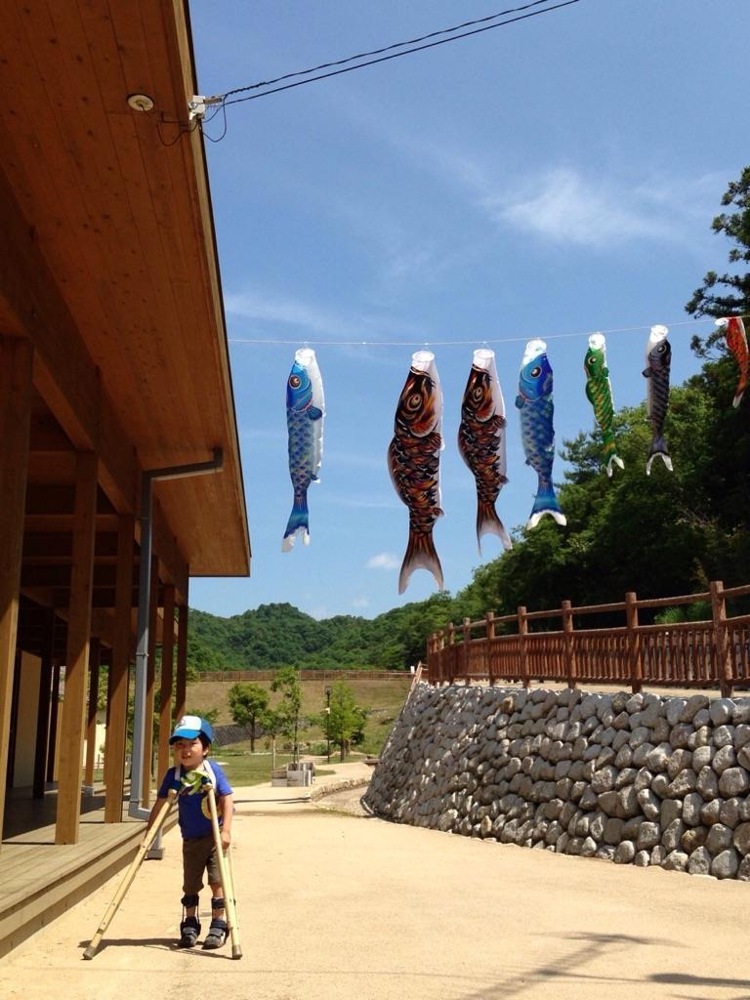

ノンフィクション
この物語は、LS-CC松葉杖訓練法ができた状況や、その訓練法を研究開発した人たちの実話です。
私（ゆざわ）が、事実に基づいて記す物です。
|
Long leg Standing stabilizer |
Crawling Car |
松葉杖 |
|
|
|
|
私は、人生のほとんどの期間を過ごした職場を2009年３月末に退職しました。でも残された人生のリタイアの時まで、肢体不自由と呼ばれる子どもの運動機能の改善と進歩が図れるように、継続して努力と研究をしたいと願っています。
田舎出の私が、田舎の祭日と比較にならないほどの人の多い東京で、肢体不自由と呼ばれる子どもとその保護者から寄せられる期待に応える為に、私がとった態度や内容をまとめた物がこれから記す物語です。
この物語は私が体験した実話です。最後まで読んでいただけるととても嬉しいです。
文中に専門語が一部出てきますが、私の能力では訳せないのでそのまま使わせていただきました。人名や組織名など、仮名とさせていただいております。類似した名称などは、たまたま一致したに過ぎず実在の物とは異なります。
私から子どもとその保護者に→→
先天性であっても後天性でも、我が子が肢体不自由（脳性麻痺、水頭症、二分脊椎症、各遺伝子疾患、脳炎脳症、知的障害など）となったことを医師から伝えられた時、その保護者の多くは驚き、何をどうしたならば良いのか悩み苦しみます。中には肢体不自由が、どのようなことを指しているのか理解できない保護者もいるのです。
告知した医師や病院の紹介するハビリテーションは、より良い指導をしてくださっていると信じ、疑うことなどありません。
〝保護者は運動障害の有る我が子を抱き、あるいはバギーに乗せて歩くこの道を、いつかこの子の手を引いて、歩くことを夢見るのです。〟
|
|
|
|
|
GCUを退院後の生後10ヶ月。 単身赴任の父に病院以外で始めて会った。 |
故郷の海を見つめて、この子の将来を思う。 |
妹も産まれ、兄の人生がどのようになるのかあまり不安もなかった。 |
「思っていたよりも障害が重く、機能の回復は難しいのではなかろうか？」といわれて、更に悔やみ悩む保護者は多いようなのです。
でも、〝本当に障害の程度が重かった。〟だったのでしょうか？
〝我が子の手を引いて歩くことが夢のこの道を、手をつないで歩くことはできないのだろうか？〟
田舎から出て
私の故郷は伊那谷です。高校を卒業するまで、小学校の修学旅行で浜名湖で海から出る朝陽を、常滑で海に沈む夕陽を初めて見た。海の臭いなのか、海の潮の香りなのか、海風の便りなのか、山々と谷川しか見たことのない私は初めての海の広さと香りに驚きました。田舎で流れる川の水には何のにおいも無いのに、海にはにおいが…。中学の修学旅行では、奈良と京都を見て大仏の大きさや清水寺の広さにも驚きました。高校での修学旅行では愛媛と岡山に出かけたのです。これが東京に出るまでに長野県の外に出た旅の全てでした。
伊那谷は北から南に細長い谷で、天竜川が常に最低地を北から南に流れ、天竜川から東と西に段丘を作り、東は赤石岳のある赤石山脈に、西は木曽駒ヶ岳のある木曽山脈に至る山里です。天竜川を挟んだ細く狭い土地で稲が栽培され、段丘では段田や畑作が行われていました。
私の子ども時代の遊びは、１年を通じての山の木が相手であったり木の実取り、春の川での沢ガニ捕りや段田の畦のドジョウ捕り、ワラビ取り、夏には河での水遊び、秋には稲に着くイナゴ捕りや茸取り、栗拾いとアケビ取り、冬には段田に張った氷遊びや斜面の雪遊びなどと自然が相手でした。幼稚園や保育園に通う経験も有りません。知る子どもは隣近所の子どもだけ！ 学校に通うようになって初めて友だちもでき、家から遠く離れた友だちの家にも遊びに行きました。
中学の一泊の旅では、朝早くの電車に乗り木曽駒ヶ岳の登山でした。今では駒ヶ岳にはロープウエイが設けられていますが、あの時代では自らの足で一歩一歩の急坂を登るのが、木曽駒ヶ岳の登山だったのです。でもその山頂で、朝陽と共に見た富士山は、とても綺麗で感動的で私の脳裏に今でも残っています。
そんな田舎の貧しい農家に生まれ、農家の手伝いを通じて私の知ったことや学んだことは、〔手を抜く作業の結果は不作と病虫害にやられて、農家の収益が減ることでした。これは他の事でも同じなのでは…〕と、その生活をしてきた私にとっては、人・人・人の行き交う東京の生活は、戸惑うことばかりでした。東京の人の歩きは、田舎の人が急ぐ時の歩きよりもずっと早く、人混みをとてもうまくぬって通るのです。電車は止まるとすぐに発車してしまい、もたもたしていたならば乗り遅れてしまうのです。ラーメンを食べに店に入っても、皆が黙って黙々と食べて、食べ終えれば出ていくのです。田舎では、「あの家はどうした」、「あの家のあの子（息子・娘）はどうした」などと、ラーメンを食べるのか話をするために店に入ったのかわからないほどなのに…。
そんな東京での勉強も終える頃には、東京人に少しは近づいたようにも自分では思っていました。
田舎の貧しい農家の次男坊、田舎に帰っても就職しなければならず、どこでどのような就職をしても両親や兄姉に何の迷惑もかけないし、どこに就職しようかと決められずにいる時、就職活動の先生から「都立の施設に臨時雇用の枠が有るから行ってみないか」とアルバイトのようにいわれたのです。それが都立西医療病院でした。臨時雇用で11月から３月まで務め、その１月末に「都に就職しないか」と係長から声をかけていただけたのです。
都に就職するか？ 田舎の県立病院に就職するか？ いずれかを選ぶこととなりました。変化の乏しい田舎に帰るのか？ 毎日が忙しく活気があるように見える東京に残るのか？ 希望に燃える若い私は、活気有る東京に残ることとしたのです。あれからほぼ半世紀…！
就職して
1972年４月に就職した私の職場は、西医療病院東分園でした。23区の東に位置し、都内とはいえない沼と空き地と点在した建物がある場所でした。国鉄（現JR東日本）駅の周辺には、店舗もありましたが、田舎の街とはあまり変わらない環境のようにも感じた東京でした。
そんな分園に、身体の自由を奪われた幼い子どもたちが、保護者に連れられて外来に通ったり、保育園のような通園に通って来ているのです。西医療病院（本園）は、入院病棟もあり、外来、通園、入園と様々な子どもが不自由な身体を少しでも動かすことができるように治療を受けていました。
分園で私が子どもに治療を施していて最初に感動したのは、知的障害の俊之ちゃん５歳でした。おじいさんが毎日のように自転車に乗せて外来に通って来られるのです。雨が降っても北風が強くても、孫を自転車の前に乗せたり負ぶい紐で背負って通って来られるのです。私が担当となったわけではありませんが、たまたま指導する機会が増え、指導しているある日に俊之ちゃんが歩くようになったのです。
|
俊之ちゃんが歩くようになったのは、たまたまその時期が来たのではなく、指導の結果と思えたのです。それは、「立つことが嫌い」、「立とうとしない」の俊之ちゃんをスタビライザと呼ばれる正しい姿勢で立つ練習のできる道具を用いて、俊之ちゃんをとても多く立たせた結果と考えたからでした。 |
|
|
なぜ子どもが変わらないのか？
変えられることなど無いのだろうか？
多くの疑問と、はがゆさを感じて数年が経過した頃、西医療病院（本園）の坂根先輩が新たな訓練法を研究していると聞き、分園から本園に研修出張することを起案し受理されたのです。
なぜ訓練の研究をしなければならなかったのか？
1975年前後は、新生児から乳児や幼児の運動機能障害に対して、その治療と育て方を指導するための療育と呼ばれる施設が、多くの自治体で新設されました。西医療病院もその一つで、1963年に開設され、東分園は1970年に開かれていました。
そのように開かれた施設で、どのような治療体系で治療したならば効果や成果が上がるのか、各地域、各施設で各努力研究していました。だがこれならといえるような治療体系は見つけることもできずに、私たちと同様にはがゆい想いをする職業人（医師や訓練士たち）は多かったのだろうと想像するのです。
そんな時期に、ヨーロッパから治療体系されたＢとＶと呼ばれる治療方法が２種入ってきたのです。努力しても運動機能の改善や進歩を図ることのできなかった職業人は、ヨーロッパから入って来たＢとＶの治療体系の考え方とその手技を学ぶために、講習会や学習会に参加してどちらかを学んだり両方を学ぶなど、それぞれできる限りに治療法を学習研究したのです。
私も考え方と手技を学ぼうとＢとＶの両法を学びに入りましたが、数回の学習会で納得のいかない説明や考え方に接するに従い、理解するどころか疑問や疑惑を覚えるようになったのです。それは、ＢとＶのいずれかで治療することによって、脳性麻痺が無くなるがごとくの説明であったり、麻痺が消えるがごとくに説かれるのです。これは私の脳内では、理解できる範囲を超えることであり、脳神経障害が手技によって無くなるなど、私の知るはかない乏しい医学知識ではとても自ら子どもに施すことなどできないと感じました。
私がこのように思っていたことを坂根先輩に伝えたところ、坂根先輩とその仲間たちが私と同じように思っていたことを教えていただきました。ヨーロッパから導入された治療体系を学ぼうとしない坂根先輩とその仲間たちは、子どもの運動機能の改善と進歩を求めて独自の取り組みが始まっていたのです。
研究のきっかけとなったのは、運動機能をはじめとするADLの向上を目的にしたある４歳の入院男児（Ａ君）が、訓練室の傍らに置いてある松葉杖をおもちゃにして遊んでいたのです。このＡ君は四つ這いも可能でつかまり立ちもできているのに、歩行を目標に指導を行っても、歩行に結びつくような成果を診ることができていませんでした。
1975年以前の西医療病院（本園と分園）で行われていた歩行への指導内容は、平行棒内歩行、歩行器使用歩行、身体の一部を支えての歩行などでした。そんな時期に、おもちゃとして遊んでいる松葉杖をＡ君に使わせて、それが訓練の指導体系に何か変化を与えるかなど思わずに、おもちゃとして通常の使用法でもってＡ君と共に遊んでみたのです。何の目的も無くＡ君と遊んだのだが、Ａ君の松葉杖操作と足の運び、特に立位バランスと歩行バランスにおいて、想いもしなかった反応を見いだすことができたのです。
Ａ君に毎日の訓練過程として、松葉杖歩行訓練を取り入れて４週間後、自らの力で杖を操作して、数メートルの歩行が可能となったのです。そしてその半年後には、30mが可能となったのです。
|
使った松葉杖 |
松葉杖歩行練習風景 |
松葉杖で一人で歩くＡ君 |

|
|

|
坂根先輩と仲間がより良い指導法を求め、より良い成果を上げるには？ と試行錯誤をしていた期間に、Ａ君は更に良い結果を表したのです。数年の入院で歩行を達成しようとしていた入院患児の中で、ほとんどの子どもがその達成目標に到達することもなく退院していたのに、Ａ君は独歩を獲得することができたのです。
このような坂根先輩を中心とした新たな訓練技術とその考え方を試行錯誤している頃、国内の肢体不自由児に対する治療体系は、ＢとＶのいずれかが大勢を占めていったのでした。
■ 試行錯誤で何が獲得できたのか
|
常に後ろからの介助で松葉杖歩行指導をしていたが… |
|
クローラーを使って前からの介助の方が子どもが安心して練習に取り組めた。 |
|
|
|
|
|
そして松葉杖の操作を指導する過程で、杖が腋からはずれることがあり、これを子どもが大変に怖がった。これを解消するためにたすき紐で松葉杖と身体を固定することとしたのです。 |
|
|
|
たすき紐で松葉杖と身体を固定しても、腋から杖がはずれることがあり、松葉杖の腋受けをフラットから三日月形のカットへと変更した。 |
|
|
|
|
|
|
|
手の握りに課題のある子どもには、平行棒や歩行器が使えなく、松葉杖歩行指導ができなかったが、握ることのできない手を紐などによって松葉杖に固定することに着目した。 |
|
|
|
現在（2018年）では、たすき紐の替わりに右のような歩行サポーターを使う保護者もおられます。 |
|
|
|
スタビライザを使用することによって、立つことが苦手な子どもにも、立つ機会が多く確保することができるようになりました。 |
|

|
一つ目の訓練法
坂根先輩とその仲間たちによって試行錯誤で生まれた訓練法は、すでに四つ這いが可能な子どもたちを杖歩行や独歩に結びつけることが可能となる方法でした。
当時（1975）年より以前は四つ這いが可能でありながらも、平行棒内歩行や歩行器使用歩行は可能となっても、杖歩行や独歩に至る子どもは少なく、訓練指導を行いながらもはがゆい想いをしていました。それが松葉杖とスタビライザを多用した指導法に換えることによって、多くの四つ這い可能で進歩や改善が診られなかった子どもが杖歩行や独歩を獲得できるようになったのです。
■ 試行錯誤の結果から何を知ったのか
健康に育つ子どもは、生後８ヶ月前後に四つ這いを開始し、その後につかまり立ちからつたい歩きを経て独歩に至るのです。このつかまり立ちから独歩に至るまでには子ども間で期間の個人差があっても、４ヶ月以上の経験学習を経て体得する事実を確認したのです。
肢体不自由となった子どもは、このつかまり立ちやつたい歩きの自己学習をすることができないのです。できない理由は、物につかまりたくてもつかまることができない、つかまって立とうとしても立つことができない、立つ意識が乏しかったり無いなどの理由からできなかったり行わないのです。
ここで研究成果の子どもを紹介したいのですが、職場を無くした私には訓練会でお会いする子どもを紹介するよりありません。研究してきたのは入院していた子どもたちですが、それを訓練会で行う外来と似た条件下の子どもで記してみました。
↓・↓・↓・
ケース１ 理央ちゃん
立つことが苦手やできない子どもに、スタビライザを用いることによって立位感覚とそれに必要なバランスと筋力を得ることが可能となったのです。
立てば伝い歩きを始めるわけですが、手足が不自由のために伝い歩きができない、立つことや伝い歩きを行わない子どもに対して、松葉杖を使用することによって容易に伝い歩きの替わりとなる松葉杖歩行の練習ができたのです。その結果理央ちゃんのように、四つ這い可能な麻痺児が杖歩行や独歩を獲得したのです。
研究成果の発表と公開
1979年に高松市で開かれた第24回全国肢体不自由児療育研究大会で、坂根先輩たちはそれまでの研究成果を「超早期松葉杖訓練」として報告発表した。それを期に毎年１回開かれた熊本と静岡の同会に繰り返し報告したが、国内で大勢となっていたＢ概念の治療に対抗することはできませんでした。
坂根先輩たちの研究を見守っていた西医療病院院長（高橋純先生）は、西医療病院を退職後筑波大学教授となり、1982年第19回日本リハビリテーション医学会総会において、「脳性まひにおける早期松葉杖歩行訓練（LS-CC松葉杖訓練法）の試み」として報告した。
坂根先輩とその仲間と私は、1985年に開かれた第９回日本肢体不自由教育研究大会で報告した。そこでは「教育分野への啓発的研究」として評価を受け、翌年にも継続しての発表を求められ、1986年の第10回記念大会では「教育研究奨励賞」を受賞することができたのです。
様々な研究会や学会で、坂根先輩とその仲間と私は報告や発表の機会を得て関係各者に理解を求めたが、国内に普及することはなかったのです。
2002年、世の運動機能障害（肢体不自由）児の運動機能が伸ばされずに放置された状態であることを悲しみ、LS-CC松葉杖訓練法研究会のホームページを公開しました。
※※ LS-CC松葉杖訓練法研究会は、2016年に閉会しました。
二つ目の訓練法
一つ目の訓練法を得るまでに次のような経験をしました。
・ 足を持ち上げることもなく床を擦るように平行棒で歩いていた子どもが、股関節と膝関節を曲げるようにして松葉杖で歩くようになった。
・ うさぎ跳び様の四つ這い変形が、正しい四つ這いをするようになった。
・ 尻這いであった子どもが、正しい四つ這いを始めた。
・ 自分で座るのに時間を要していた子どもが、容易に座ることができるようになった。
これらを試行錯誤中に経験して発見したのです。
この事実から次のような推論を引出し、再び取り組み試行錯誤を開始したのです。
四つ這いや尻這いを行える子どもは、何らかの方法で床に座ることができる子どもです。だが多くの子どもが自力では床に座れないでいるのです。座れないでいる事実を可能とするのに、試行錯誤によって得られたことを応用できないかと考えたのです。時間を要しなければ座れなかった子どもが、容易に座れるようになったのは何らかの良い刺激が入ったのだろうと…。
寝返りや肘這いをしているが、自力で座位となれない子どもに対して、自力で坐位となるために、スタビライザや松葉杖での練習が役に立たないのかと…。
坂根先輩とその仲間たちは、首がすわり寝返りを行うが、自力での坐位ができない子どもに、スタビライザと松葉杖を使っての訓練を試みていましたが、自分で座るためには股関節を意思によって曲げ、上肢の力がある程度は必要なことがわかったのです。
・ 股関節を曲げることを理解させるには？
・ 上肢に力を付けさせるためには？
このテーマに沿って試行錯誤の結果から生まれたのが二つ目の訓練法でした。
・ 平行棒内で足を擦るように歩いていた子どもが、股関節や膝関節を曲げて膝が上がるように歩くようになったのは？
・ 尻這いであったのが正しい四つ這いができるようになったのは？
・ 自分で座るのに要していた時間が短縮できたのは？
いずれもが股関節の動きが改善されたと考えられるのです。この動きの改善は、自力での坐位獲得に役に立たないのか…？
|
自力での坐位となる際に、体幹を上肢の力で起こさなければならず、上肢の力と粗大運動が求められると気がついたのです。これらを達成するために、クローラーを使って手歩きをさせたならば、想い以上の成果が見られたのです。 |

|
|
■ 一つ目の訓練と二つ目の訓練
研究によってできあがった訓練指導法は、全ての子どもに松葉杖を使って歩かせているように、他人には見えたようなのです。同じように見えている松葉杖訓練は、それには大きな違いがあり、他人に誤解されるとわかり、訓練名を変えて練習することとなりました。
【松葉杖歩行訓練】
四つ這いや尻這いができる子どもに、杖歩行や独歩を目的に訓練する方法が松葉杖歩行訓練です。
【松葉杖訓練】
首がすわり寝返りができる子どもに対して、自分で座ることと四つ這いができるようにする訓練を松葉杖訓練と呼びました。
【松葉杖訓練から松葉杖歩行訓練】
低年齢からの開始や、高年齢でありながらも他の訓練法からこの訓練を開始して、自力で座れなかった子どもが座れるようになり更に四つ這いから杖歩行や独歩に目標が変わっていくケースも多々有るのです。
ケース２ 弘樹君
自分で座ることや四つ這いすることが難しいと思われる子どもが、自分で座れるようになり、四つ這いもするのです。それどころか松葉杖で歩くことも可能となっているのです。
麻痺による運動機能の発達不能と発達の遅れ
新生児から乳児にかけて、運動能力は短期間に発達します。そのメカニズムは、周囲の大人や兄姉の真似をする。興味を引かれる物に対して見たい、触りたい、嘗めたいなどの行動を起こす。これらによって発達するわけですが、麻痺のために大人や兄姉の真似はできないし、興味があっても思うように身体を動かせないし、それで動かそうとしなくなったり、あるいは動かしても、目的を達成するような動きとなりません。正常ではないといわれる動きをするようになります。
新生児期や乳児期に麻痺となる場合と、成人（運動機能が５歳以上となった子どもを含む）となってから麻痺となる場合では、その対応法と結果は大いに異なります。異なるという言葉は間違いかも知れませんが、身体を動かした経験の有る者と無い者との間には、麻痺後に身体を動かすメカニズムを獲得するのに大いに格差があるからなのです。
両者共に麻痺となった時に、身体をどのように動かしたなら良いのか？ どのようにすれば動くのか？ この点を理解することがとても難しいようなのです。脳卒中となった人が、不自由であっても歩ける人と歩けない人に別れるのは、その麻痺の程度が異なるからなのです。
成人の麻痺では、健康体の時に身体を動かした経験があります。それでも卒中となった時に身体の動かし方がわからなくなるのです。ましてや新生児や乳児では、身体を動かした経験もなく記憶もないのです。麻痺児には一つ一つの動かし方の指導が必要で、誤学習させた時にはそれを修正するためにより多くの時間を要し、誤学習を修正できないことも多々起きているのです。
首がすわるためには、自分の頭がどの様な位置となっているのか理解できなければ、それを立ち直すことなどできません。座る、立つ、歩くも同じことです。
初めて座る時があるわけですが、床に手をつきます。その手が思うように動かなかったり、動かす方法がわからなければ、床に手をついて座ることはできません。
自分でお座りができるようになり、四つ這いで動くようになっても、物につかまり立ち上がり、つたい歩きをすることは、手の機能と足の機能が正常でないととても怖い姿勢となります。「怖い、できない」の原因を少しでも軽減して、スタビライザで立たせられ、松葉杖で歩けて、クローラーで手の機能を改善する、麻痺児にとって苦手な動きが苦手ではなくなる訓練法を開発発見したのです。
知的障害による運動機能の発達の遅れ
麻痺による運動機能障害をどのように克服し、少しでも改善進歩させるために、二つの指導体系を習得した坂根先輩とその仲間と私は、麻痺を伴わない運動機能の発達に遅れの有る子どもたちに、得た二つの体系を主とした考え方を当てはめて応用することにしてみました。
知的障害とそれらの合併障害によって運動機能の発達が遅れるのは、限られた物にしか興味を持たなかったり、ほとんど興味を持つ物が無かったり、それがために身体を動かそうとしないことが大きな原因です。
どの新生児でも乳児でも、自ら身体を動かし体験することによって、運動機能は発達していきます。その自ら身体を動かす行為が欠けてしまえば、運動能力の発達は遅れてしまうのです。
このような興味の乏しい子どもや、身体を動かすことの苦手な子どもに対して、スタビライザや松葉杖とクローラーの助けを受けて、苦手な動きや姿勢を少しでも容易にできると考えたのです。
ケース３ 智樹君
ケース４ 昭吾君
ケース５ 晃君
誤学習を受けたままで終えていたならば、ここの子どもたちはどの様な運動機能や姿勢を獲得していたのでしょうか？
診察や指導する者にとっては、子どもがどの様になろうと感心が無いのだろうか？
首がすわらないし寝返りもできない
首がすわり、寝返りもできるが、自分で座ることや四つ這いができなかった子どもに、自分で座ったり四つ這いができるようにするように指導する方法は、どうにか可能となりました。またそれ以上の能力を持つ子どもに対しての指導も可能となった今、残された首がすわらずに、寝返りができない子どもを、どのように指導したなら良いのかが課題として残されているのです。
この首がすわらずに、寝返りが行えない子どもに対して、行う指導を基本訓練と称して一定の姿勢と動きを指導しています。
この指導が十分に行われたか行われなかったかの違いは、その後の運動機能に大きな影響を与えると考えています。その指導内容とは…
・ うつ伏せ姿勢に慣れて、頭を上げる（首のすわりに影響、寝返りに影響）。
・ 床の上での各種坐位保持（あぐら位、正座、割座、首のすわりに影響）。
・ 腕立て姿勢（首のすわりに影響）。
・ 寝返りの練習。
これらの指導を行い運動機能の改善と進歩を図ってみました。
■ 全身のストレッチ
身体の自由を奪っている原因は、麻痺や知的障害として記してきました。でもそれだけではないのです。
麻痺のタイプによっては身体が硬くなることもありますが、身体が柔らかいはずの知的障害でも、身体が硬くなっていることがよくあり、この身体の一部や全身の硬さが、身体を動かしにくくさせているのです。
麻痺の中では、痙直型と強剛型、緊張性のアテトーゼ型とこれらの混合型で、身体が硬くなることは病的に仕方ないことなのかも知れません。でも、硬くなってしまう病的なことや、硬くなるはずのない知的障害での固さを防ぐには、全身のストレッチが大いに役に立つのです。
健康な私たちも身体は硬くなります。それを予防するために、トレーニングジムに通ったり、自らストレッチ体操を行ったりしています。防ぐことのできない身体の硬さとは、骨折などによって、数週間のギブス固定で、固定されていた関節の動きはずっと悪くなります。それを改善するために、わざわざ病院などに通って、リハビリを受けて痛みと戦い、関節を動くようにしてもらっているのです。なぜ関節を動かしてもらうのかといえば、動きが悪ければ移動や作業の妨げとなったり、行えなくなるからなのです。
子どもたちも同様で、身体を動かさなければその関節は硬くなります。自ら動かせなくとも同じ結果です。自ら動かしても動かすことを拒んでも、その関節は硬くなっていきます。本人に替わり身体を動かしてあげなければなりません。この動かしてあげることが、ストレッチです。
ストレッチを行う際には、行われる者との間で、力比べのような関係にならないで行いたいです。
運動機能の改善と進歩を願う子どもに対しては、全ての子どもにストレッチを忘れないことが大切です。
ケース６ 友弘君
ケース７ 兵蔵君
ケース８ 惣一郎君
運動療法を受ける全ての子どもが、杖歩行や独歩に至らないのは残念なことですが、少しでも身体が辛い状況でなく生活できることも、一つの運動療法の目的です。
しかし、安易な目標や指導結果で終えてはならないのです。子どもの持っている最大の能力を引き出すのがセラピストの役割なのです。
私が見る現在の療育界
1972年に療育界に就職してから、38年間に渡り、身体の自由を失った子どもとその保護者と共に職場で過ごしてきました。
私が就職したばかりは、身体の自由を失った子どもに対して、療育施設と呼ばれる各地域の専門分野の人々が、子どもの自由を回復させるためにはどうすれば良いのかと、それぞれが試行錯誤して研究に励んでいました。それが、脳性麻痺が無くなるとか、脳性麻痺の麻痺が特に改善するなどの期待と夢に傾き、時が経過するに従い麻痺児の機能は改善進歩しないような風潮となってしまいました。
過去の時代では、〝２歳で自分でお座りをすれば、歩行が可能。４歳で自分でお座りをすれば、半分が歩行可能。８歳までに歩行しなければ、以後は歩行不能。〟などといわれていました。現在では、〝生まれつき障害の子どもは、生まれた時の脳のダメージによって運動能力は定まっている。訓練をしたからとか手術をしたからの理由で、機能の状態が変わるわけではない。〟などといわれているのです。
医学は進歩しているといわれ、確かにこの子どもたちの世界以外の医学は進歩しているように想えます。それなのに、この子どもたちの世界だけが進歩も研究もなされないでいるのでしょうか？
私が務めた頃は、○○療育園とかいわれる施設が多かったようなのですが、現在では子ども発達支援センターとか名前変更するところも出てきています。療育から発達支援センターに変わらなければならない理由は何なのでしょうか？
肢体不自由といわれる子どもは、支援するだけで運動機能が改善するのでしょうか？
支援も必要ですが、それ以上に指導しなければ機能の改善や進歩は図れないと思うのです。職場を退き、「ライクワーク」や「ライトワーク」として活動で肢体不自由となった子どもたちの指導を行う今、ここに記したような子どもたちと遭遇し、記したような状況を診ることができています。これまでにこのページの中に記してきましたが、改善できる物も改善せずに、子どもの状態を診て指導しているとは思えない状態で過ごさせられているのです。
幾つかのケースをご紹介しましたが、その中で医師や理学療法士から期待できない発言や医療人とは思えない発言を聞くこととなりました。
らい予防法は、らいを予防すると共に、らい患者の医療を行い、あわせてその福祉を図り、もつて公共の福祉を増進することを目的として1953年８月15日法律第214号として制定されたのです。しかし、らい予防法の廃止に関する法律とハンセン病問題の解決の促進に関する法律として、1996年４月１日法律第28号をもって廃止されたのです。この間、特効薬のプロミンが1943年に開発され、日本でも1947年に投薬試験が始まり、効果が確認されていたのです。らい予防法によって、強制隔離、継続強制入所、従業禁止などと人権の無い生活をらい患者に与え続けていたのです。
らい予防法によって誰が益を受けていたのか、それは施設管理者やそこに務める者とそれらに関する者たちだったのです。らい患者は迷惑を受けて自由を失っていたのです。
肢体不自由児はどうなのでしょうか？
療育施設でも、発達支援センターでも、子どもを診るのではなく子どもを保護するだけであって、利益者は、らい予防法と同じように想えるのです。
肢体不自由児の不自由さを少しでも改善するためには、プロとしての仕事が求められます。プロでなければならない職業人が、単なる労働者であってはならないのです。でも、残念なことに、多くの職業人が国家資格を持つ、プロでない労働者となっているのです。
より早期に、子どもたちを中心に考える新たな体制が現れることを願うばかりです。
より良い療育環境が整うのを願うと共に、より良い療育を求める社会運動が始まることを期待します。その主たる根として、特定の医師が現れて欲しいです。
どのようなお問い合わせでも・・・ こちらまで→
@ トップに戻る
@ LS-CC松葉杖訓練法とは？
@ ハビリテーションとは？
@ 運動療法とは？
@ 児鹿先生とお手伝いする道具たち
@ さんぽ道 その２
@ お便り紹介
@ question and answer
@ information
製作 LS-CC松葉杖訓練法 湯澤廣美